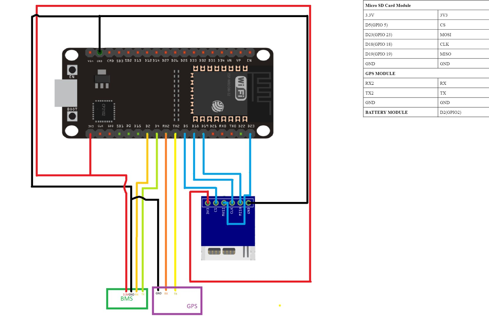
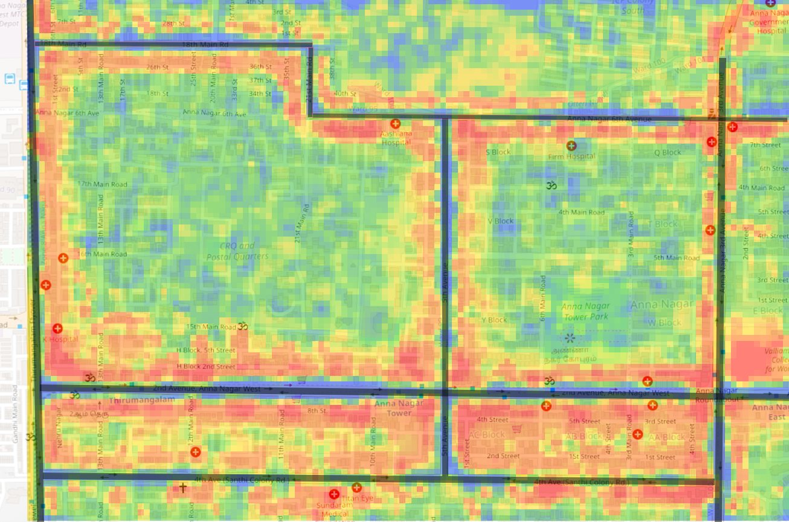
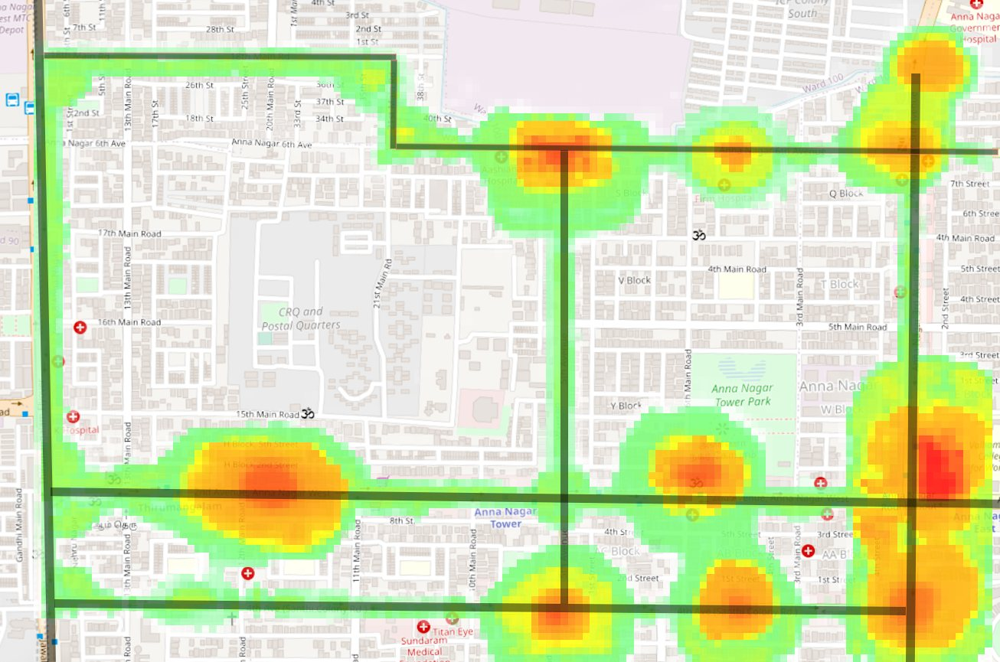
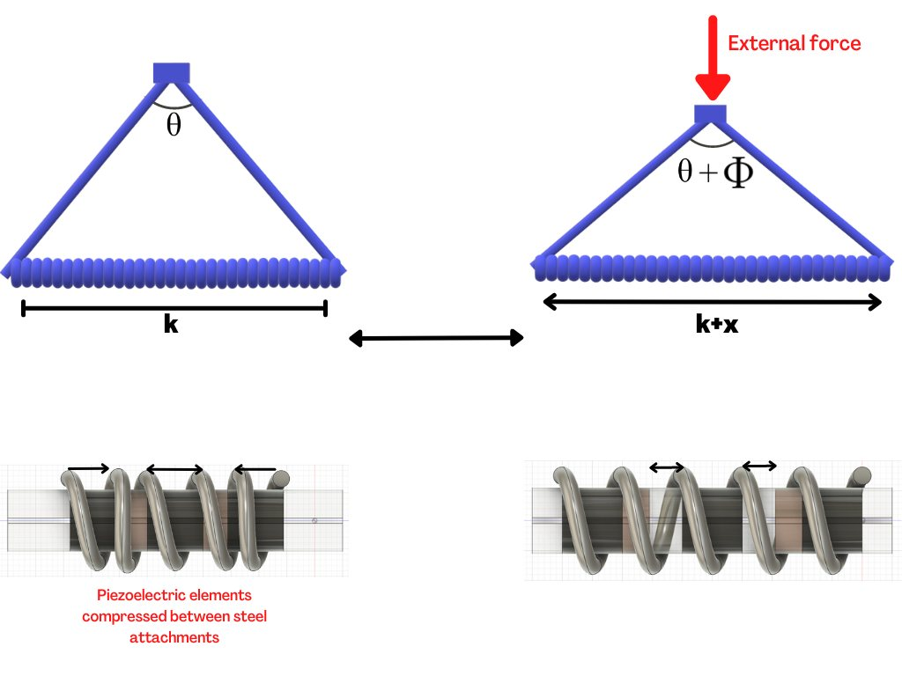
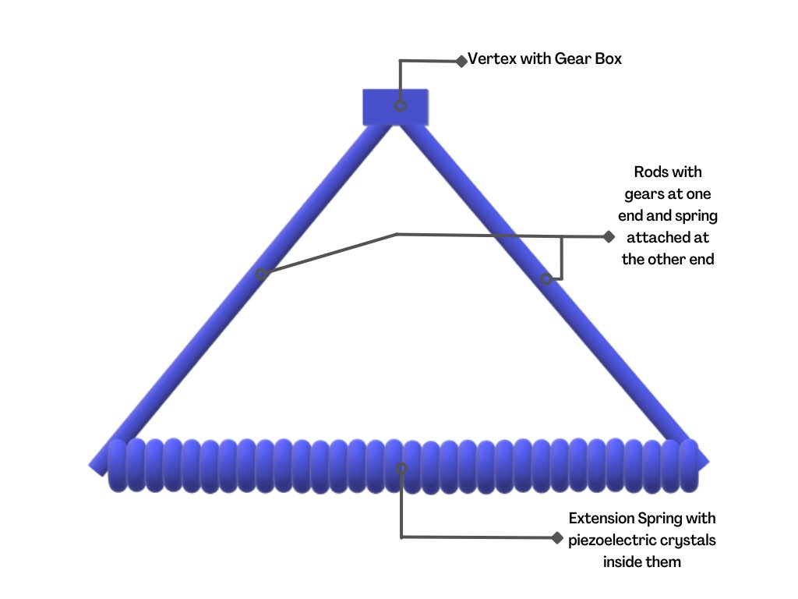
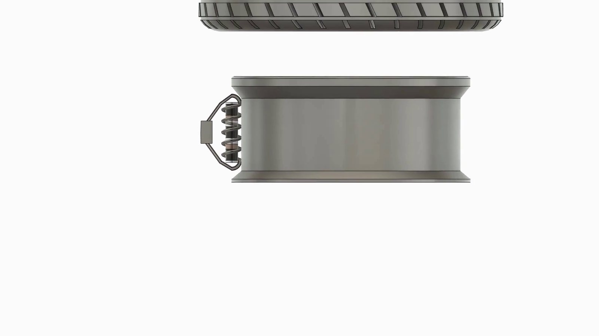
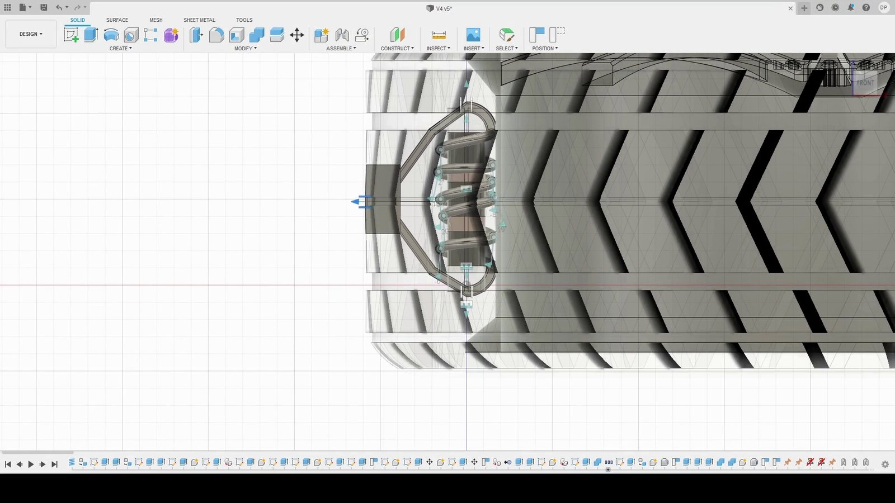

Why it matters
The guidelines we worked from placed electric-vehicle chargers on a fixed grid and estimated demand from surveys. Our report cited stations in use for about 15% of their operating time, which suggested that many stood in the wrong places.
The idea
Let the vehicles record where they use their charge. A small logger writes battery level and position every 100 metres, and an algorithm ranks charger sites by the demand recorded around them. The entry also carried a battery-swap concept and a tyre transducer that continued the E-Bike's wheel.
1The problem
The guidelines we worked from asked for one charging station in every 3 km by 3 km grid in a city and one every 25 km along highways. Demand inside a grid was estimated from surveys. Our report cited stations that were in use for about 15% of their operating time, which suggested that many of them stood in the wrong places.
We ran a survey of our own. Nearly 69% of responses reported battery-charging problems with their vehicles, and 40% said there were too few charging stations in the city.
2What we built
A logger that reports where charge is used
The logger, which the team called the bug, is an ESP8266 board with a micro-SD card. It connects to the vehicle's battery management system (BMS) and to a GPS module. Every 100 metres travelled, it writes the battery level and the position to the card.
When the vehicle passes an open Wi-Fi network, the bug uploads the file to a server and clears it. The records are not indexed to a vehicle, to protect the driver's privacy. On the server, an algorithm ranks candidate locations by the demand recorded around them and returns the best three.


We tested the two assumptions we could test. To check that open networks are common enough, we drove round Chennai for 30 minutes and took a screenshot of the visible networks about every 30 seconds: 52 screenshots showed 9 open networks. To check the ranking, we made nine dummy datasets, ran them through the algorithm and plotted the top three locations for each.




A battery pack that one station can swap
The second part was a concept, with no hardware. A standard, modular pack would hold about 45% of the car's battery capacity and slide out of the chassis on a dovetail joint, while the rest of the battery stays fixed and is designed by each manufacturer. Each swappable pack would carry a 2D code recording its model, date, vehicle, location and maker, so that a pack can be traced from station to station.
A transducer inside the tyre
A tyre bulges where it meets the road and recovers as it turns away, once per revolution. That flexing is energy lost as heat. The third part was a transducer designed to recover some of it, following a published design by Wang and colleagues for a flex-compressive piezoelectric energy-harvesting cell.
Two steel rods meet at an acute angle, geared together at the vertex. An extension spring joins their free ends. Inside the spring, cylindrical steel pieces alternate with PZT-4 piezoelectric elements. When the tyre presses on the vertex, the rods open and the spring stretches, which pulls the pieces apart. When the load goes, the spring recoils and presses the steel pieces onto the piezo elements, and that pressure spike produces charge.




| Design parameter | Value |
|---|---|
| Piezoelectric elements | PZT-4, three per transducer |
| Steel pieces | ASTM A684 (AISI 1094) |
| Spring constant | 0.98 N/mm |
| Spring wire and inner diameter | 2 mm and 15 mm |
| Transducers per tyre | 18 |
| Force to compress a transducer | about 1.2 N per mm |




Each element would feed a bridge rectifier inside the tyre. Slip rings between the axle and the body would carry the output to a voltage regulator and on to the BMS. Because the transducers resist compression, fitting them has an effect like raising the tyre pressure, so the recommended pressure would have to be lowered.
3Results
The entry placed second nationally in the Electrifying Transportation track in January 2022. In the same competition the team's PackMax placed second in its own track.
4The limit it exposed
The transducer exists only as CAD and a hand calculation. The report estimated its electrical output from the piezoelectric constants and the spring force, and no transducer was built to check that estimate. I would not quote its numbers today.
The design had other open problems, which the report listed. PZT elements are brittle and crack under repeated load. Tyre dimensions differ between models, so one transducer does not fit all. The design suits tubeless tyres only, and we could find almost no PZT manufacturers in India to cost it with. The recommender ran on dummy data and never on readings from a vehicle.
I had tried the same idea at school, on the wheel of the E-Bike. E-Metric gave it a mechanism and a calculation. It still lacked a measurement.